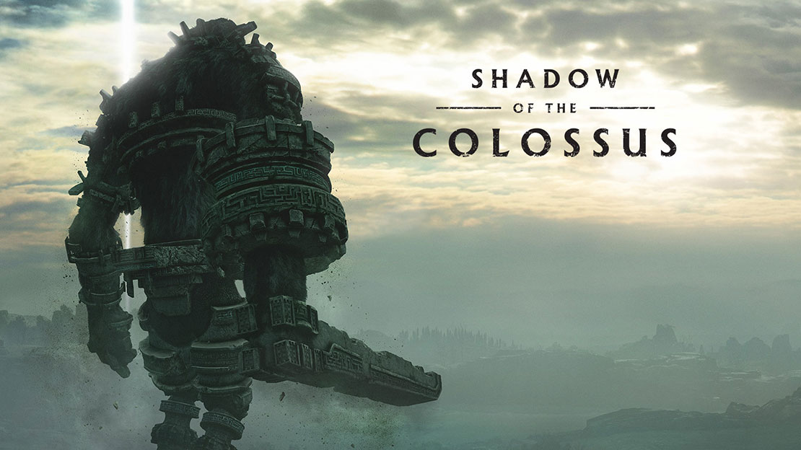

Shadow of the Colossus

Shadow of the Colossus é uma prequela de ICO, e conta a história de Wander na Região Proibida, que deve usar uma espada lendária para trazer sua amada de volta à vida. A voz de uma entidade sem corpo conhecida como Dormin é quem guia o aventureiro a exterminar criaturas gigantescas chamadas Colossus.